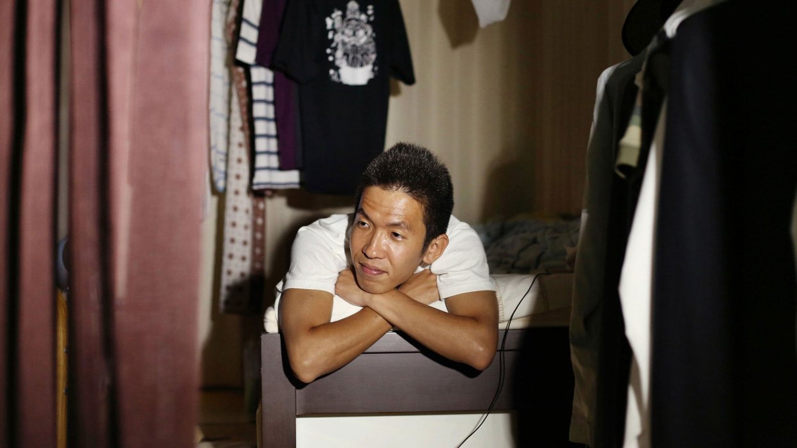
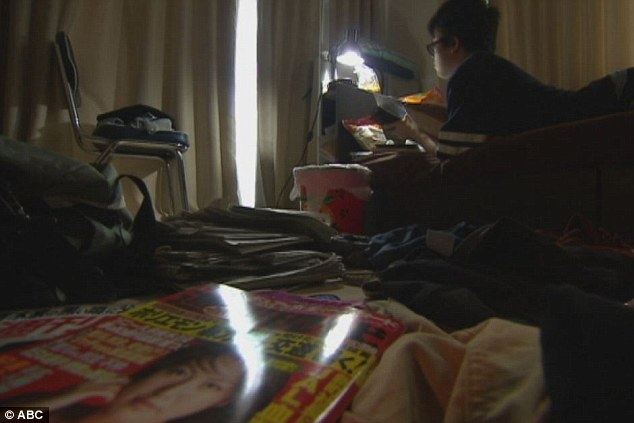
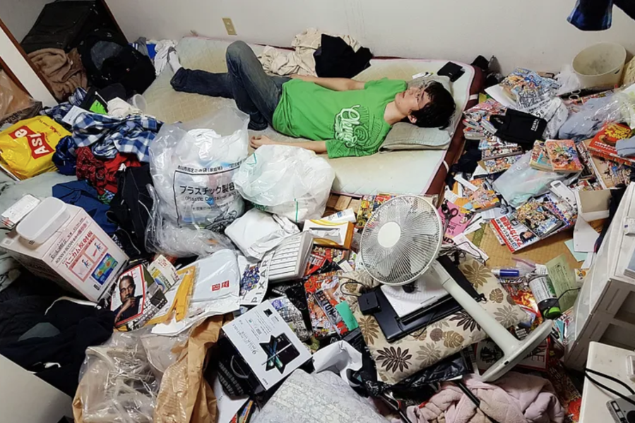
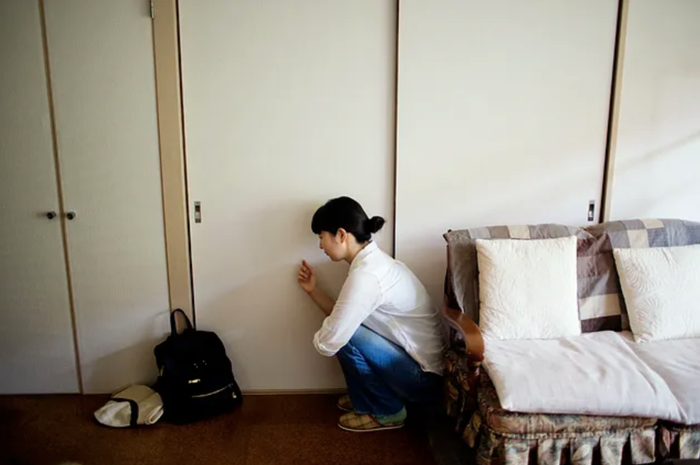
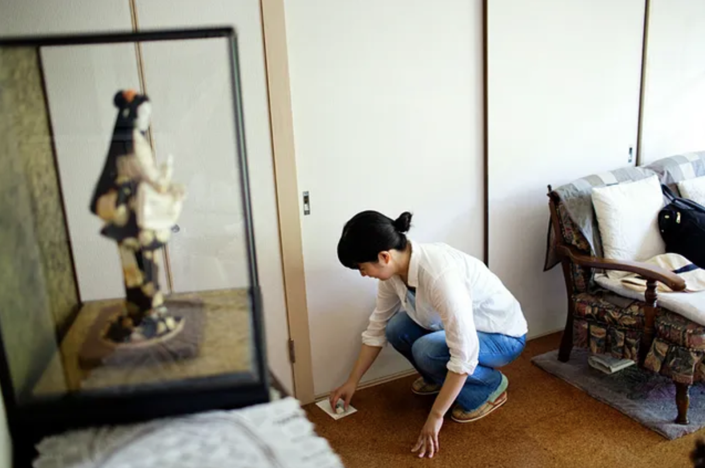

noun
People who are in a state of severe social withdrawal, avoidance, and physical isolation. Often accompanied by psychological distress for a period of at least six months[4,5].
Such individuals often refuse to leave their house, do not go to work or school, and isolate themselves from society and families. Often times, the social aspect associated with all of these environments become impossible for the person.
Hikikomori refers to both the social phenomenon, as well as the person themself. The term was coined by psychologist Saito Tamaki in his 1998 book “Social Withdrawal - Adolescence Without End."[5] According to this article, there are about 1.5 million Hikikomoris in Japan.
▼
While the lifestyle of a Hikikomori varies drastically, they typically involve locking themselves in their room, idling away at the hours, and losing many years of their life in isolation.[9] In most cases, a Hikikomori's parents are their only source of financial support, dedicating years to ensure their child’s basic living needs are met. Parents are often reluctant to speak to others in order to maintain their reputation, while the child remains quietly hidden from the world.[6]
There are also many shut-ins, called soto-komori, who venture out once a day or week to grocery shop at convenience stores.[9]



⟶
Figure 1:
Ikuo Nakamura, 34, who had locked himself in his room for seven years. He had disagreements with teachers and friends, and later found life unfair. Photo by Maika Elan
Figure 2:
Yuto Onishi, 18. He had not left his bedroom for three years, spending his days surfing the internet and reading manga. Photo credit.
Figure 3:
Riki Cook, 30, had been a Hikikomori for three years. American-Japanese, he felt like he does not belong to any country. Photo by Maika Elan
▼
Although not exclusive to Japan, Hikikomoris are relatively rampant there compared to other countries. Saito Tamaki views the problem as largely a family and social disease, caused by a mix of interdependence between Japanese parents and their children, and the pressure on these children to excel in academics and the corporate world.[6]
Takahiro Kato, a professor of psychiatry who studies and treats Hikikomori, cites a famous Japanese saying: “A protruding nail will be hammered down.”
He goes on to state Japan’s rigid social norms, high expectations from parents and peers, as well as a culture of shame targeting those who deviate from this “norm” as reasons why Japan’s society is a fertile breeding ground for feelings of inadequacy that cause one to withdraw.
Many Hikikomoris describe miserable school years where they didn’t or couldn’t conform to the norm. Being bullied for being too fat, shy, or even better than others. One Hikikomori was a victim of bullying in fifth grade because he excelled in baseball without having played as long as his teammates.[6]
"I blamed myself," "I didn't want to see anyone, I didn't want to go outside." - Anonymous Hikikomori
"School is a monoculture, everyone has to have the same opinion. If someone says something they're out of the group" - Anonymous Hikikomori
"I don't have anything I want to do," "I missed the chance. I was in graduate school while most people were getting jobs. If I'd gone to work it would have been good" - Hiroshi
Others might cite career failings as their reason for becoming Hikikomoris. As one accounts that, after losing his job in 2015, extreme pressure from his family as well as public criticism from the leader of his religious group (which he attended almost daily) eventually caused him to withdraw from society.
Kenji Yamase, who has been an on and off recluse for the past 30 years, sums up the sentiment well.
“Most Hikikomori are people who can’t get back into society after straying off the path at some point… They have been forced into withdrawal. It isn’t that they’re shutting themselves away – it’s more like they’re being forced to shut themselves away.”
▼
Japan has, compared to other countries, an extremely conformative society; where uniformity is prized, where the collective and other is valued over the individual, where reputations and outward appearances are paramount. These values bleed into many aspects of their culture, especially their social norms, which are extremely strict, rigid, and detailed.
These are all combined with extreme pressure to excel academically. As well as a toxic work culture that normalises unpaid overtime, where declining invitations to work-related social gatherings are viewed as rude and insensitive, where taking leave and holidays are frowned upon, and much more.[1]
These values and guidelines help maintain harmony and societal order, yet put extreme pressure on individuals to always upkeep these strict social norms and expectations. If you step out of line on any aspect, it has a strong impact on the way other people see you.
“If a kid doesn’t follow a set path to an elite university and a top corporation, many parents – and by extension their children – view it as a failure"
- Mariko Fujiwara, director of research and the Hakuhodo Institute of Life and Living in Tokyo.
▼
Although Hikikomori is seen as a social phenomenon instead of an actual mental condition, there exists many support lines for them in Japan, with almost all involving normalising social interactions, and creating spaces for such.
Such tactics can involve family training to fix dysfunctional home environments, support groups and organisations that aim to cultivate “safe havens” for them to practise and re-learn social skills. These can also be combined with therapy and medication for underlying psychiatric disorders.[6]
A common first point of contact for Hikikomoris are “rental sisters,” people that families can hire to befriend hikikomoris and break their isolation.
Yoshi Kawakami, a rental sister, recounts waiting outside a doorstep near Kyoto, though the winter snow and summer heat, for two hours or more, fueled by the hope that someone will answer.


Figures 4 & 5: Rental sister Ayako Oguri writes to Masahiro Koyama, who has been a Hikikomori for 10 years. Since he refuses to talk, she writes letters and leaves them in front of his room. Photos by Maika Elan.
Most first meetings start with one-sided conversations through the door. They'll talk about her interests and hobbies, often with no answer. Months can go by before a hikikomori opens the door and even more months, or a year, before they go out.
But it does happen. It may take time and patience, but there are many avenues of support for Hikikomoris.
▼